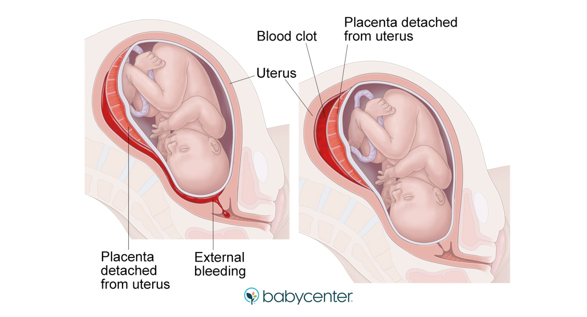
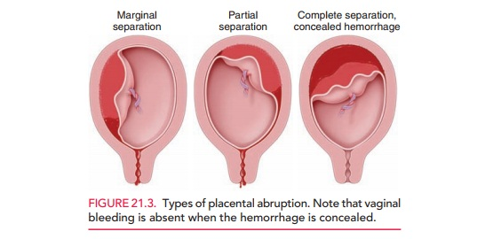

Abruptio placenta or placental abruption is the early separation of a placenta from the lining of the uterus before the completion of the second stage of labor. It is one of the causes of bleeding during the third term of pregnancy. Placental abruption is a relatively rare but serious complication of pregnancy and places the well-being of both mother and fetus at risk.
Placental abruption occurs when the maternal vessel tear away from the placenta, and bleeding occurs between the uterine lining and the maternal side of the placenta. As the blood accumulates, it pushes the uterine wall and placenta apart. The placenta if the fetus' source of oxygen and nutrients, as well as the way the fetus source of oxygen and nutrients, as well as the way the fetus excretes waste products. Diffusion to and from the maternal circulatory system is essential to maintaining these life-sustaining functions of the placenta. When accumulating blood causes separation of the placenta from the maternal vascular network, these vital functions of the placenta are interrupted. If the fetus does not receive enough oxygen and nutrients, it dies.
The clinical implications of a placental abruption vary based on the extent of the separation and the location of the separation. Placental abruption can be complete or partial and marginal or central.
•Discovery of a blood clot on the maternal side of a delivered placenta
•Diagnosis is made retrospectively
•No sign of vaginal bleeding or a small amount of vaginal bleeding
•Slight uterine tenderness
•Maternal blood pressure and heart rate WNL
•No signs of fetal distress
•No sign of vaginal bleeding to a moderate amount of vaginal bleeding
•Significant uterine tenderness with tetanic contractions
•Change in vital signs: maternal tachycardia, orthostatic changes in blood pressure.
•Evidence of fetal distress.
•No sign of vaginal bleeding to heavy vaginal bleeding
•Tetanic uterus/ board-like consistency on palpation
•Maternal shock
•Clotting profile alteration: hypofibrinogenemia and coagulopathy Fetal death
•Vaginal bleeding, although there might not be any
•Abdominal pain
•Back pain
•Uterine tenderness or rigidity
•Uterine contractions, often coming one right after another
1. Trauma or Injury
2. High Blood Pressure
3. Smoking
4. Multiple Pregnancies
5. Advanced Maternal Age
6. Previous Incidence
7. Uterine Distension
To prevent fetal anoxia, a woman requires the insertion of a large-gauge intravenous catheter for fluid replacement and oxygenation by mask. To set baselines and track development, externally monitor the fetal heart sounds and record the mother's vital signs every five to fifteen minutes. Up until the time of birth, other findings will be made in addition to the baseline fi-bringen determination.
In order to avoid placing pressure on the vena cava and further interfering with the fetal circulation, keep a woman in a lateral posture rather than supine. It's critical to avoid disturbing the wounded placenta any more. So therefore, never do an examination of the abdomen, vagina, or pelvis on a woman who has a confirmed or suspected placental separation.
Placental separation can be graded to improve prediction of outcomes for both the mother and the fetus. The fetus cannot get enough oxygen and nutrition until the separation is minimal (grades 0 and 1). In such cases, the pregnancy has to end.

Cesarean delivery is the preferred delivery option if a vaginal birth does not appear imminent. A cesarean delivery may be extremely risky if DIC has developed since there is a chance that bleeding will occur from the surgical incision both during and after the procedure. A woman's fibrinogen level can be raised intravenously before and during surgery by administering fibrinogen or cryoprecipitate, which is fibrinogen-containing. In the worst case scenario, preventing exsanguination may need a hysterectomy.
REFERENCES:
•Schmidt, P., Skelly, C. L., & Raines, D. A. (2022, December 19). Placental abruption. StatPearls - NCBI Bookshelf. https://www.ncbi.nlm.nih.gov/books/NBK482335/
•Silbert-Flagg, J. (2022). Maternal and Child Health Nursing: Care of the Childbearing and Childrearing Family. (9th ed.). Wolters Kluwer.